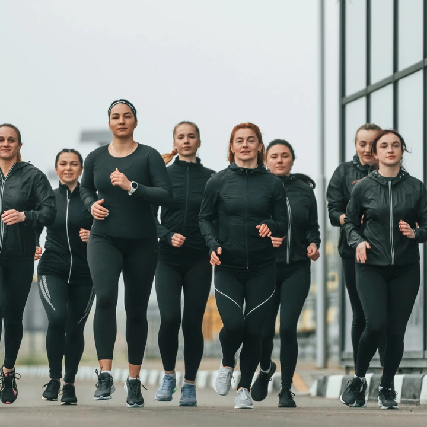

Run Clubs in Mumbai.
12 run clubs in Mumbai, Navi Mumbai and Thane, with where and when they run as their sources state it. Last checked 24 Oct 2026. Times change, so confirm with the club before you go.
We only list what a source says. A blank means the source did not say.

12 run clubs in Mumbai.
Source: Endorfin run-club pages, plus the club's own pages where they exist.
Bombay Running
Where: Mumbai; hill sessions on Kane Road
When: Weekend training and events
Mumbai Road Runners
Where: Routes around Bandra, NCPA and Ghatkopar
When: Monthly Sunday group runs; recent ones on 11 Oct, 6 Sep and 9 Aug
Recent runs were 21K; its anniversary run offered 10K, 16K and 21K.
Pudhe Chala Mumbai
Where: South Bombay and Bandra: NCPA, Carter Road, BKC and Juhu
When: Regular Sunday runs
Time Out Mumbai calls it beginner friendly and free to join.
Source and links: Time Out Mumbai · Strava · Instagram
Bombay On Foot
Where: Carter Road and Lokhandwala; Bandra and Juhu
When: Mostly weekend mornings
Mixes runs with Pilates and boxing.
Source and links: Endorfin · Time Out Mumbai · Instagram
The RunBay Club
Where: NCPA Nariman Point, Marine Drive, Worli Sea Link and Bandra Fort
When: Weekly sessions
All skill levels welcome for some runs.
Founders Running Club Mumbai
Where: Bandra, Carter Road and Lokhandwala
When: Weekly runs, mostly Saturday mornings
Easy conversational pace for all fitness levels.
ROVE Run Club
Where: Bandra: Carter Road and the coastal promenade
When: Regular Saturday and Sunday runs
Distances from easy 3 km loops to long runs.
jaagopowai
Where: Powai Lake and local turfs
When: Weekend runs
Runs of 2.5K to 5K.
The Mumbai Run Club
Where: Mulund and Powai
When: Mostly weekends, with Sunday morning long runs
Says sessions cater to all paces.
Rukna Mana Hai Run Club
Where: Thane
When: Recent community runs on Sunday mornings
Runs of 2.5K to 5K, with sports meetups afterwards.
The Run Club Thane
Where: Thane
When: Recent events mostly on Sundays
Routes of 2K to 6K; some events are ticketed.
Running in Mumbai.
Where people run
Carter Road in Bandra is a popular waterside run. Great Runs describes about 1.5 km along Carter Road to Joggers Park, whose track is 400 m with a mud strip for running. From there a dedicated path of about 1 km, the Bandstand Promenade, continues towards Bandra Fort. It says the area is flat and crowded, so go early.
Wikipedia describes Marine Drive as a 3-km promenade lined with palm trees. It also notes that the Mumbai Marathon has been held there every year since 2004. For a lake, Wikipedia says Powai Lake is used for recreation.
Weather and air
Wikipedia gives Mumbai a cooler season from December to February and a hotter season from March to May. The southwest monsoon runs from June to the end of September, and July is the wettest month. Mumbai is nearly rainless from October to May. Average relative humidity in the evening is about 81% in July and August, and 47 to 51% in winter. We did not find a sourced note on Mumbai air quality, so we have left it out.
Races near you
The Tata Mumbai Marathon is on 17 January 2027, according to its official page. The page lists a marathon, half marathon, Open 10K and Dream Run, plus senior citizens, champions with disability and virtual categories. Check the site for registration details and age limits.
How run clubs work here
Time Out Mumbai calls Pudhe Chala beginner friendly and free to join, with regular Sunday runs organised through a WhatsApp community. It says Bombay On Foot is joined through Instagram. Other clubs charge, so check each one. See the full list of run clubs in Mumbai above.
Sources
New to running with a club?
Arrive ten minutes early, tell the leader it is your first run and keep the pace easy. Read the full guide. Other cities: Delhi · Bengaluru · Hyderabad · Pune · Chennai.
Your City Is Waiting.
Tell us your club. We will write when Treqz Run opens in Mumbai.